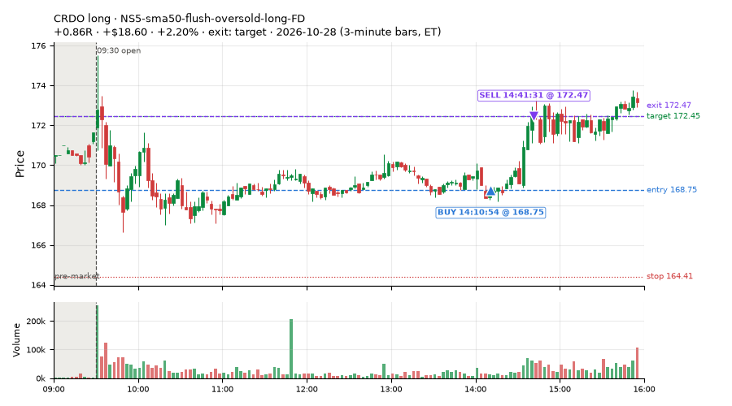
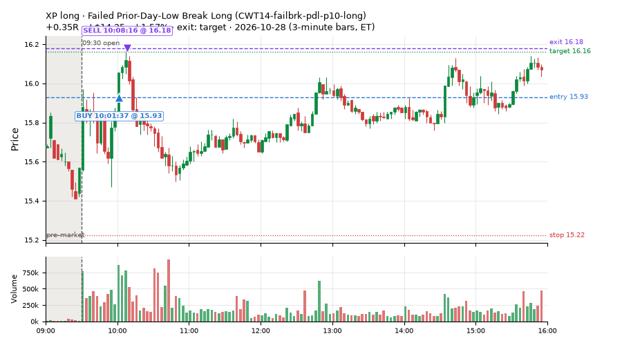
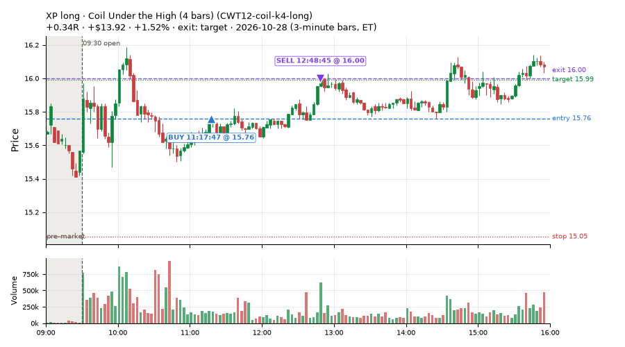
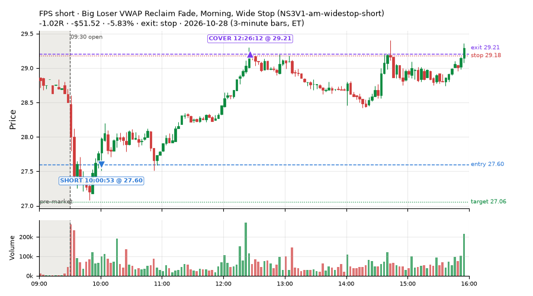
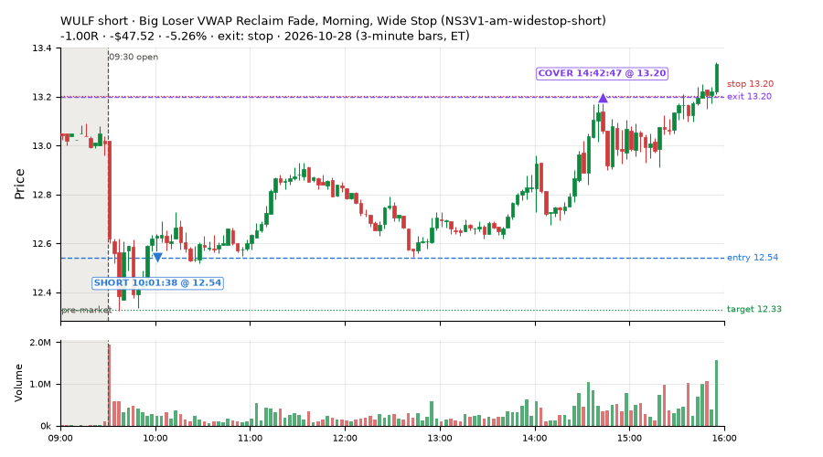
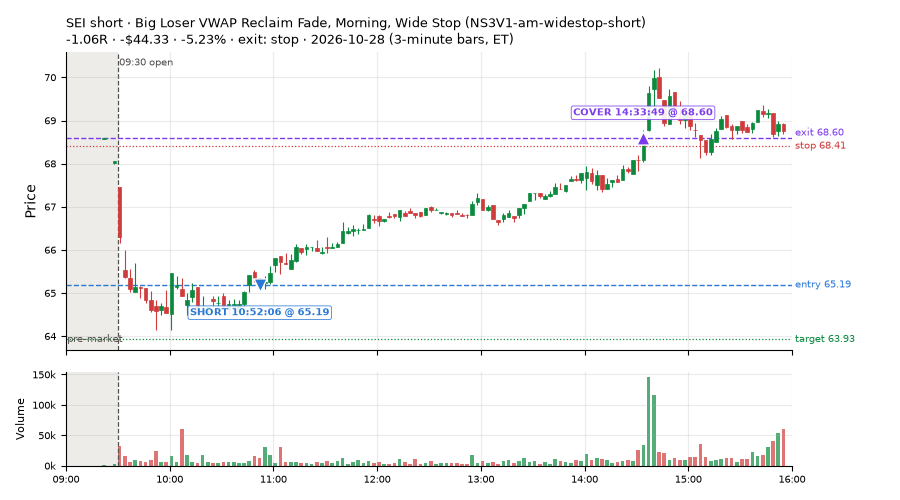
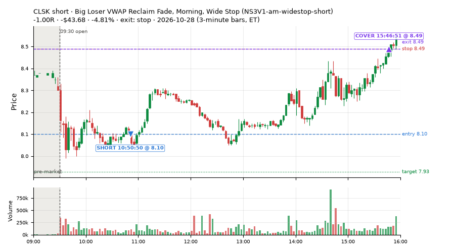
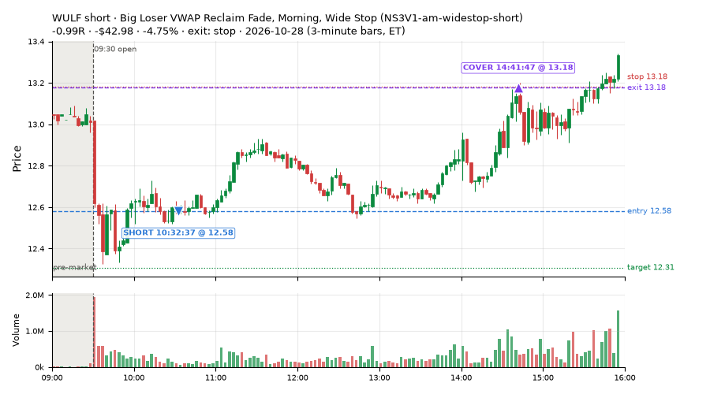

213 trades · win rate 51% · P/L $-881.83
PROBATION: no live setup has passed both locked test periods. 10 owner-directed setups added 2026-10-08 (MarcoFlow top 5 + 5 new), untested live. RW6G1 (RW6 + VWAP band guard) added 2026-10-09, probation.

| Symbol | Setup | Side | In | Out | Entry | Exit | Exit reason | % gained | P/L |
|---|---|---|---|---|---|---|---|---|---|
| CRDO | NS5-sma50-flush-oversold-long-FD | long | 14:10 | 14:41 | 168.75 | 172.47 | target | +2.20% | $18.60 |
| XP | Failed Prior-Day-Low Break Long (CWT14-failbrk-pdl-p10-long) | long | 10:01 | 10:08 | 15.93 | 16.18 | target | +1.57% | $14.25 |
| XP | Coil Under the High (4 bars) (CWT12-coil-k4-long) | long | 11:17 | 12:48 | 15.76 | 16.00 | target | +1.52% | $13.92 |
| Symbol | Setup | Side | In | Out | Entry | Exit | Exit reason | % lost | P/L |
|---|---|---|---|---|---|---|---|---|---|
| FPS | NS3V1-am-widestop-short | short | 10:00 | 12:26 | 27.60 | 29.21 | stop | -5.83% | $-51.52 |
| WULF | NS3V1-am-widestop-short | short | 10:01 | 14:42 | 12.54 | 13.20 | stop | -5.26% | $-47.52 |
| SEI | NS3V1-am-widestop-short | short | 10:52 | 14:33 | 65.19 | 68.60 | stop | -5.23% | $-44.33 |
| CLSK | NS3V1-am-widestop-short | short | 10:50 | 15:46 | 8.10 | 8.49 | stop | -4.81% | $-43.68 |
| WULF | NS3V1-am-widestop-short | short | 10:32 | 14:41 | 12.58 | 13.18 | stop | -4.75% | $-42.98 |








Signal to fill: median 1s, 90th percentile 3s (212 trades). Bars close each minute; the order follows the bar close.
Best excursion (MFE): median 0.40R; worst (MAE) median 0.71R. 33% of trades never got +0.25R in our favour; 4 reached +1R and still closed at or below 0.
| Symbol | Setup | Best R | Worst R | Closed R |
|---|---|---|---|---|
| TSN | CWT14-failbrk-pdl-p05-lowvol-long | +1.11 | -1.03 | -1.06 |
| TSN | CWT14-failbrk-pdl-p10-long | +1.11 | -1.03 | -1.06 |
| TSN | CWT14-failbrk-pdl-p10-lowvol-long | +1.11 | -1.01 | -1.06 |
| TAP | CWT14-failbrk-pdl-p10-long | +0.74 | -1.00 | -1.04 |
| GWRE | RW1-gapdn-bounce-flowsell-short-FD | +0.61 | -1.22 | -1.12 |
| Entry time | Trades | Win | Avg R | P/L |
|---|---|---|---|---|
| 09:50-10:30 | 48 | 52% | -0.15 | $-264.38 |
| 10:30-11:30 | 99 | 52% | -0.22 | $-423.04 |
| 11:30-13:00 | 20 | 60% | -0.01 | $1.81 |
| 13:00-14:00 | 20 | 40% | -0.40 | $-125.06 |
| 14:00-16:00 | 26 | 50% | +0.02 | $-71.16 |
| Setup | Trades | Win | Avg R | Adj R (net of SPY) | P/L |
|---|---|---|---|---|---|
| Coil Under the High (4 bars) (CWT12-coil-k4-long) | 77.0 | 56% | -0.14 | -0.26 | $-66.73 |
| Spike-Pullback Flag Breakout (CWT12-flag-s1-long) | 1.0 | 100% | +0.58 | +0.64 | $6.51 |
| Stretched Below VWAP Bounce (CWT13-vwapstretch-z05-long) | 2.0 | 100% | +0.32 | +0.21 | $5.07 |
| Failed Prior-Day-Low Break Long (0.05 ATR, low volume) [fill] (CWT14-failbrk-pdl-p05-lowvol-long) | 36.0 | 67% | +0.01 | -0.08 | $3.71 |
| Failed Prior-Day-Low Break Long (CWT14-failbrk-pdl-p10-long) | 39.0 | 62% | +0.07 | -0.09 | $-36.22 |
| Failed Prior-Day-Low Break Long (0.1 ATR, low volume) [fill] (CWT14-failbrk-pdl-p10-lowvol-long) | 7.0 | 29% | -0.55 | -0.62 | $-21.18 |
| L3-gap-slope-rsi5hi-FD | 1.0 | 100% | +0.02 | +0.04 | $0.30 |
| * Shallow Nasdaq Dip, Breadth Turn (TQQQ) (near-miss) (LD2-qqq-dip015-breadthturn-tqqq-t05s1-long) | 1.0 | 100% | +1.05 | +0.76 | $8.86 |
| * SPY Dip of 0.2 ATR, Breadth Turn (SPXL, trailing) (near-miss) (LD6-spy-dip020atr-breadthturn-spxl-holdtr-long) | 1.0 | 100% | +0.28 | +0.15 | $1.45 |
| MF5-flowsell-vwapup-rsi5hi-FD | 3.0 | 33% | -0.20 | -0.22 | $-1.88 |
| Late-Day ETF Dip Buy (near-miss) (NM-ETF-late-dip-di-long) | 2.0 | 100% | +0.33 | +0.23 | $6.08 |
| Afternoon Higher-Low Long (near-miss) (NM-HL-T75-pm-long) | 1.0 | 0% | -1.02 | -1.03 | $-23.28 |
| Early Sellers into a Pop (index down, no gap up) (near-miss) (NM-MF3-qqqdn-gapdn-FD) | 1.0 | 0% | -1.00 | -0.88 | $-3.57 |
| Big Loser VWAP Reclaim Fade (all day) (NS3-failed-vwap-reclaim-short-FD) | 11.0 | 9% | -0.94 | -0.85 | $-153.67 |
| Big Loser VWAP Reclaim Fade, Morning, Wide Stop (NS3V1-am-widestop-short) | 13.0 | 0% | -0.92 | -0.89 | $-520.59 |
| Afternoon VWAP Reclaim Fade (NS4-pm-vwap-reclaim-oversold-short) owner-directed; holdouts once: Sep-Oct -0.086R n49, Apr-Jun -0.080R n342 | 1.0 | 0% | -1.06 | -0.83 | $-2.48 |
| NS5-sma50-flush-oversold-long-FD | 1.0 | 100% | +0.86 | +0.74 | $18.60 |
| RW1-gapdn-bounce-flowsell-short-FD | 5.0 | 80% | +0.60 | +0.63 | $13.23 |
| RW4-ns3-adv150-short-FD | 3.0 | 33% | -0.63 | -0.62 | $-28.36 |
| exhaustion_short-FD | 7.0 | 0% | -0.70 | -0.67 | $-87.68 |
Market direction (SPY, beta 1) accounted for $46.07 of today's $-881.83; the rest ($-927.90) came from the setups themselves. Avg R net of SPY: -0.26 (incl. a hedge leg's cost; report only).
49 setups live today. Today: 378 signals, 213 taken, 29 lost because another setup held the symbol (8%). Since 2026-10-12 (13 sessions): 7354 signals, 3697 taken, 655 lost to other setups (9%). Peak open positions today 89 of 400 slots. Earnings blackout removed 1241 symbols before scanning.
Simulated playing time (not live): 3645 what-if trades of signals not taken, avg -0.12R, 57% winners; of them 655 lost to another setup (avg -0.20R).
Silent: LD4-st4-breadthup-t1s05-long, LD8-spy-dip030-breadthturn-spxl-holdtr-long, LD1-ns1-breadthup-t05s1-long, NM-RWR1-exh150-gapdn-spyup-pm-short, CWT04-backside-lh-a25-short, CWT04-backside-vwaptest-a25-short · Crowded out: NS3-failed-vwap-reclaim-short-FD, MF5-flowsell-vwapup-rsi5hi · Starved: NS5-sma50-flush-oversold-long-FD, RW4-ns3-adv150-short-FD, exhaustion_short-FD
| Prio | Setup | Today sig / taken | Sessions | Signals / taken / trades | Taken/day | Expected/day | Lost to other setups | Lost to (setup n) | Top skip reasons | SIMULATED: not-taken n / avg R / win | Verdict |
|---|---|---|---|---|---|---|---|---|---|---|---|
| 1 | Big Loser VWAP Reclaim Fade, Morning, Wide Stop NS3V1-am-widestop-short | 17 / 13 | 4 | 18 / 13 / 13 | 3.25 | 5.30 | 2 | NS3V1-am-widestop-short 2 | symbol held by another setup 2, spread / quote / size 2, not shortable / shorts off 1 | 5 / -1.03R / 0% | ok 16.2 entries/week |
| 2 | Big Loser VWAP Reclaim Fade (all day) NS3-failed-vwap-reclaim-short-FD | 39 / 11 | 5 | 68 / 25 / 25 | 5.00 | 22.02 | 22 | NS3V1-am-widestop-short 17, NS3-failed-vwap-reclaim-short-FD 4, RW4-ns3-adv150-short-FD 4 | symbol held by another setup 22, spread / quote / size 13, not shortable / shorts off 8 | 43 / -0.76R / 12% | crowded-out 22 of 68 signals (32%) lost to setups already holding the symbol |
| 3 | * Oversold EMA Cross-Down with Breadth Turning Up (near-miss) LD4-st4-breadthup-t1s05-long | 0 / 0 | 6 | 0 / 0 / 0 | 0.00 | – | 0 | – | – | 0 / – | silent no signals in 6 session(s); no expected rate on file |
| 4 | * Oversold Slope Turn with Breadth Turning Up (near-miss) LD5-st2-breadthup-t05s1-long | 1 / 0 | 6 | 1 / 0 / 0 | 0.00 | – | 1 | NS3V1-am-widestop-short 1 | symbol held by another setup 1 | 1 / +0.51R / 100% | slow no entries yet |
| 5 | * SPY Dip of 0.30%, Breadth Turn (SPXL, trailing) (near-miss) LD8-spy-dip030-breadthturn-spxl-holdtr-long | 0 / 0 | 6 | 0 / 0 / 0 | 0.00 | – | 0 | – | – | 0 / – | silent no signals in 6 session(s); no expected rate on file |
| 6 | * Oversold Slope Turn after an SPY Dip-Turn (near-miss) LD3-st2-idxturn-t05s1-long | 1 / 0 | 6 | 1 / 0 / 0 | 0.00 | – | 1 | NS3V1-am-widestop-short 1 | symbol held by another setup 1 | 1 / +0.51R / 100% | slow no entries yet |
| 7 | * SPY Dip of 0.2 ATR, Breadth Turn (SPXL, trailing) (near-miss) LD6-spy-dip020atr-breadthturn-spxl-holdtr-long | 1 / 1 | 6 | 2 / 2 / 2 | 0.33 | – | 0 | – | – | 0 / – | slow 1.7 entries/week; ~36 weeks to 60 trades |
| 8 | * Oversold Pop with Breadth Turning Up (near-miss) LD1-ns1-breadthup-t05s1-long | 0 / 0 | 6 | 0 / 0 / 0 | 0.00 | – | 0 | – | – | 0 / – | silent no signals in 6 session(s); no expected rate on file |
| 9 | * Shallow Nasdaq Dip, Breadth Turn (TQQQ) (near-miss) LD2-qqq-dip015-breadthturn-tqqq-t05s1-long | 1 / 1 | 6 | 2 / 2 / 2 | 0.33 | – | 0 | – | – | 0 / – | slow 1.7 entries/week; ~36 weeks to 60 trades |
| 10 | * Oversold Pop after an SPY Dip-Turn (trailing) (near-miss) LD7-ns1-idxturn-holdtr-long | 0 / 0 | 6 | 1 / 1 / 1 | 0.17 | – | 0 | – | – | 0 / – | slow 0.8 entries/week; ~72 weeks to 60 trades |
| 11 | Monday Weak-RS NS3 Short (near-miss) NM-RWN5-ns3-mon-weakrs-short | 0 / 0 | 8 | 6 / 5 / 5 | 0.62 | – | 0 | – | spread / quote / size 1 | 1 / -1.02R / 0% | slow 3.1 entries/week; ~19 weeks to 60 trades |
| 12 | Early NS3 Short While QQQ Up (near-miss) NM-RWR3-ns3-qqqup-early-short | 0 / 0 | 8 | 3 / 2 / 2 | 0.25 | – | 0 | – | spread / quote / size 1 | 1 / -1.02R / 0% | slow 1.2 entries/week; ~48 weeks to 60 trades |
| 13 | Early NS3 Short While SPY Up (near-miss) NM-RWN3-ns3-spyup-early-short | 0 / 0 | 8 | 3 / 2 / 2 | 0.25 | – | 0 | – | spread / quote / size 1 | 1 / -1.02R / 0% | slow 1.2 entries/week; ~48 weeks to 60 trades |
| 14 | Late-Day ETF Dip Buy (near-miss) NM-ETF-late-dip-di-long | 3 / 2 | 8 | 8 / 7 / 7 | 0.88 | – | 0 | – | spread / quote / size 1 | 1 / +0.75R / 100% | slow 4.4 entries/week; ~14 weeks to 60 trades |
| 15 | NS2 Up-3 Short, QQQ Up, Slope Down (near-miss) NM-RWR4-ns2-up3-qqqup-slopedn-short | 0 / 0 | 8 | 6 / 5 / 5 | 0.62 | – | 0 | – | not shortable / shorts off 1 | 1 / -1.04R / 0% | slow 3.1 entries/week; ~19 weeks to 60 trades |
| 16 | Afternoon Exhaustion Short, Gap-Down, SPY Up (near-miss) NM-RWR1-exh150-gapdn-spyup-pm-short | 0 / 0 | 8 | 0 / 0 / 0 | 0.00 | – | 0 | – | – | 0 / – | silent no signals in 8 session(s); no expected rate on file |
| 17 | NS2 Short, SPY Up 0.5%, Not Friday (near-miss) NM-RWN4-ns2-spyup05-notfri-short | 0 / 0 | 8 | 9 / 8 / 8 | 1.00 | – | 0 | – | not shortable / shorts off 1 | 1 / -1.04R / 0% | slow 5.0 entries/week; ~12 weeks to 60 trades |
| 18 | Gap-Down Capitulation Buy (near-miss) NM-AR-AM-gapdown-capitulation-long | 0 / 0 | 8 | 29 / 25 / 25 | 3.12 | – | 0 | – | spread / quote / size 4 | 4 / -0.54R / 25% | ok 15.6 entries/week |
| 19 | Quiet Downtrend Bounce Short (near-miss) NM-AMS-N1-quiet-morning-short | 0 / 0 | 8 | 1 / 0 / 0 | 0.00 | – | 1 | NM-AR-AM-gapdown-capitulation-long 1 | symbol held by another setup 1 | 1 / +0.51R / 100% | slow no entries yet |
| 20 | Gap-Down Reclaim Fade, Afternoon (near-miss) NM-PM-gapdn-above-pdh-rvol-short | 0 / 0 | 8 | 1 / 1 / 1 | 0.12 | – | 0 | – | – | 0 / – | slow 0.6 entries/week; ~96 weeks to 60 trades |
| 21 | Gap-Down VWAP Loss Short, Slope Filter (near-miss) NM1-cwt09-g10-vwaploss-short | 1 / 0 | 8 | 16 / 2 / 2 | 0.25 | – | 0 | – | not shortable / shorts off 11, spread / quote / size 3 | 14 / -0.23R / 36% | slow 1.2 entries/week; ~48 weeks to 60 trades |
| 22 | Afternoon Higher-Low Long (near-miss) NM-HL-T75-pm-long | 1 / 1 | 8 | 10 / 9 / 9 | 1.12 | – | 0 | – | spread / quote / size 1 | 1 / +0.49R / 100% | slow 5.6 entries/week; ~11 weeks to 60 trades |
| 23 | Backside Lower-High Short (big runner) CWT04-backside-lh-a25-short | 0 / 0 | 13 | 0 / 0 / 0 | 0.00 | – | 0 | – | – | 0 / – | silent no signals in 13 session(s); no expected rate on file |
| 24 | Backside VWAP-Test Short (big runner) CWT04-backside-vwaptest-a25-short | 0 / 0 | 13 | 0 / 0 / 0 | 0.00 | – | 0 | – | – | 0 / – | silent no signals in 13 session(s); no expected rate on file |
| 25 | Gap-Down VWAP Loss Short (10% gap) CWT09-gapdn-vwaploss-g10-short | 5 / 0 | 13 | 44 / 4 / 4 | 0.31 | – | 0 | – | not shortable / shorts off 35, spread / quote / size 3, daily loss cap 1 | 40 / -0.22R / 42% | slow 1.5 entries/week; ~39 weeks to 60 trades |
| 26 | Panic Flush Reversal (deep, 5x volume) CWT05-flush-m075-v5-long | 0 / 0 | 13 | 6 / 3 / 3 | 0.23 | – | 0 | – | daily loss cap 2, spread / quote / size 1 | 3 / +0.42R / 100% | slow 1.2 entries/week; ~52 weeks to 60 trades |
| 27 | NS5-sma50-flush-oversold-long-FD NS5-sma50-flush-oversold-long-FD | 2 / 1 | 6 | 6 / 5 / 5 | 0.83 | 6.32 | 0 | – | spread / quote / size 1 | 1 / -0.01R / 0% | starved 0.83 entries/day vs ~6.32 expected |
| 28 | Gap-Down Bounce Rejection Short (10% gap) CWT09-gapdn-bounce-g10-lowerhalf-short | 5 / 0 | 13 | 70 / 11 / 11 | 0.85 | – | 0 | – | not shortable / shorts off 53, spread / quote / size 4, price through stop/target 1 | 59 / -0.70R / 17% | slow 4.2 entries/week; ~14 weeks to 60 trades |
| 29 | Backside Lower-High Short CWT04-backside-lh-a15-short | 1 / 0 | 13 | 4 / 1 / 1 | 0.08 | – | 0 | – | spread / quote / size 2, daily loss cap 1 | 3 / +0.28R / 67% | slow 0.4 entries/week; ~156 weeks to 60 trades |
| 30 | Panic Flush Reversal (5x volume) CWT05-flush-m05-v5-long | 0 / 0 | 13 | 9 / 4 / 4 | 0.31 | – | 1 | CWT14-failbrk-orl-p10-long 1 | daily loss cap 2, spread / quote / size 2, symbol held by another setup 1 | 5 / +0.51R / 100% | slow 1.5 entries/week; ~39 weeks to 60 trades |
| 31 | Panic Flush Reversal (deep, 3x volume) CWT05-flush-m075-v3-long | 0 / 0 | 13 | 15 / 10 / 10 | 0.77 | – | 0 | – | daily loss cap 3, spread / quote / size 1, broker rejected 1 | 5 / +0.41R / 100% | slow 3.8 entries/week; ~16 weeks to 60 trades |
| 32 | Spike-Pullback Flag Breakout CWT12-flag-s1-long | 1 / 1 | 13 | 17 / 13 / 13 | 1.00 | – | 0 | – | daily loss cap 2, spread / quote / size 1, broker rejected 1 | 4 / -0.16R / 75% | slow 5.0 entries/week; ~12 weeks to 60 trades |
| 33 | Backside VWAP-Test Short CWT04-backside-vwaptest-a15-short | 1 / 0 | 13 | 11 / 6 / 6 | 0.46 | – | 1 | CWT14-failbrk-pdl-p05-lowvol-long 1 | spread / quote / size 2, symbol held by another setup 1, daily loss cap 1 | 5 / +0.79R / 60% | slow 2.3 entries/week; ~26 weeks to 60 trades |
| 34 | Early Sellers into a Pop (index down, no gap up) (near-miss) NM-MF3-qqqdn-gapdn-FD | 4 / 1 | 6 | 31 / 19 / 19 | 3.17 | 4.90 | 3 | NM-AR-AM-gapdown-capitulation-long 3 | spread / quote / size 5, not shortable / shorts off 4, symbol held by another setup 3 | 12 / +0.47R / 75% | ok 15.8 entries/week |
| 35 | Stretched Above VWAP Fade (far) CWT13-vwapstretch-z075-short | 0 / 0 | 13 | 27 / 14 / 14 | 1.08 | – | 0 | – | not shortable / shorts off 8, daily loss cap 4, spread / quote / size 1 | 13 / -0.58R / 23% | slow 5.4 entries/week; ~11 weeks to 60 trades |
| 36 | RW1-gapdn-bounce-flowsell-short-FD RW1-gapdn-bounce-flowsell-short-FD | 8 / 5 | 6 | 56 / 33 / 33 | 5.50 | 17.10 | 4 | NM-AR-AM-gapdown-capitulation-long 1, NM-HL-T75-pm-long 1, CWT12-coil-k4-long 1 | daily loss cap 10, spread / quote / size 6, symbol held by another setup 4 | 23 / +0.68R / 87% | ok 27.5 entries/week |
| 37 | MF5-flowsell-vwapup-rsi5hi-FD MF5-flowsell-vwapup-rsi5hi-FD | 8 / 3 | 6 | 37 / 27 / 27 | 4.50 | 15.47 | 0 | – | spread / quote / size 6, not shortable / shorts off 4 | 10 / +0.47R / 70% | ok 22.5 entries/week |
| 38 | RW4-ns3-adv150-short-FD RW4-ns3-adv150-short-FD | 3 / 3 | 6 | 29 / 19 / 19 | 3.17 | 17.34 | 6 | NS3-failed-vwap-reclaim-short-FD 6, RW4-ns3-adv150-short-FD 6 | symbol held by another setup 6, spread / quote / size 3, not shortable / shorts off 1 | 10 / -0.37R / 20% | starved 3.17 entries/day vs ~17.34 expected |
| 39 | Sellers into Strength (all day) MF5-flowsell-vwapup-rsi5hi | 5 / 0 | 6 | 17 / 0 / 0 | 0.00 | 15.47 | 12 | MF5-flowsell-vwapup-rsi5hi-FD 12 | symbol held by another setup 12, spread / quote / size 3, not shortable / shorts off 2 | 17 / -0.14R / 47% | crowded-out 12 of 17 signals (71%) lost to setups already holding the symbol |
| 40 | exhaustion_short-FD exhaustion_short-FD | 13 / 7 | 6 | 65 / 44 / 44 | 7.33 | 64.64 | 3 | CWT12-coil-k4-long 3 | not shortable / shorts off 12, spread / quote / size 6, symbol held by another setup 3 | 21 / -0.16R / 48% | starved 7.33 entries/day vs ~64.64 expected |
| 41 | Stretched Below VWAP Bounce (far) CWT13-vwapstretch-z075-long | 0 / 0 | 13 | 40 / 9 / 9 | 0.69 | – | 0 | – | daily loss cap 28, spread / quote / size 3 | 31 / -0.40R / 39% | slow 3.5 entries/week; ~17 weeks to 60 trades |
| 42 | Stretched Below VWAP Bounce CWT13-vwapstretch-z05-long | 2 / 2 | 12 | 222 / 58 / 58 | 4.83 | – | 1 | CWT14-failbrk-pdh-p05-lowvol-short 1 | daily loss cap 152, spread / quote / size 10, symbol held by another setup 1 | 163 / -0.14R / 60% | ok 24.2 entries/week |
| 43 | Early Sellers, Mid-High RSI MF2-open-rsimidhi-flowsell | 0 / 0 | 1 | 0 / 0 / 0 | 0.00 | 1.30 | 0 | – | – | 0 / – | quiet - wait no signals yet; only ~1.3 expected so far |
| 44 | Afternoon VWAP Reclaim Fade NS4-pm-vwap-reclaim-oversold-short | 2 / 1 | 1 | 2 / 1 / 1 | 1.00 | 3.05 | 0 | – | spread / quote / size 1 | 1 / -1.11R / 0% | slow 5.0 entries/week; ~12 weeks to 60 trades |
| 45 | Failed Prior-Day-Low Break Long (0.1 ATR, low volume) [fill] CWT14-failbrk-pdl-p10-lowvol-long | 19 / 7 | 8 | 164 / 101 / 101 | 12.62 | – | 7 | CWT14-failbrk-pdl-p10-long 3, CWT14-failbrk-pdl-p05-lowvol-long 2, CWT09-gapdn-bounce-g5-lowerhalf-short 1 | spread / quote / size 42, daily loss cap 12, symbol held by another setup 7 | 61 / -0.10R / 64% | ok 63.1 entries/week |
| 46 | L3-gap-slope-rsi5hi-FD L3-gap-slope-rsi5hi-FD | 17 / 1 | 6 | 98 / 30 / 30 | 5.00 | – | 0 | – | not shortable / shorts off 62, spread / quote / size 6 | 67 / -0.14R / 61% | ok 25.0 entries/week |
| 47 | Failed Prior-Day-Low Break Long CWT14-failbrk-pdl-p10-long | 61 / 39 | 13 | 546 / 349 / 349 | 26.85 | – | 22 | CWT14-failbrk-pdl-p10-lowvol-long 15, CWT14-failbrk-pdl-p05-lowvol-long 4, CWT14-failbrk-pdl-p05-long 2 | spread / quote / size 123, daily loss cap 31, symbol held by another setup 22 | 195 / -0.06R / 65% | ok 134.2 entries/week |
| 48 | Failed Prior-Day-Low Break Long (0.05 ATR, low volume) [fill] CWT14-failbrk-pdl-p05-lowvol-long | 55 / 36 | 13 | 598 / 384 / 384 | 29.54 | – | 28 | CWT14-failbrk-pdl-p10-lowvol-long 17, CWT14-failbrk-pdl-p10-long 13, CWT14-failbrk-pdl-p05-long 7 | spread / quote / size 122, daily loss cap 57, symbol held by another setup 28 | 212 / -0.08R / 64% | ok 147.7 entries/week |
| 49 | Coil Under the High (4 bars) CWT12-coil-k4-long | 101 / 77 | 13 | 567 / 427 / 427 | 32.85 | – | 6 | CWT14-failbrk-pdl-p05-lowvol-long 1, CWT14-failbrk-pdl-p10-lowvol-long 1, CWT14-failbrk-pdh-p05-lowvol-short 1 | spread / quote / size 72, per-setup cap 42, daily loss cap 19 | 139 / -0.03R / 65% | ok 164.2 entries/week |
Every trade is attached as a CSV you can open and edit in Excel or Google Sheets. Live page: https://misiti15.github.io/MCF/live/